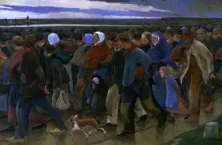

Le réalisme social est le terme utilisé pour le travail produit par des peintres, des graveurs, des photographes, des écrivains et des cinéastes qui vise à attirer l'attention sur les conditions sociopolitiques réelles de la classe ouvrière comme moyen de critiquer les structures de pouvoir derrière ces conditions.
Bien que les caractéristiques du mouvement varient d'une nation à l'autre, il utilise presque toujours une forme de réalisme descriptif ou critique.
Le réalisme social, en tant que mouvement artistique qui s'est imposé aux États-Unis entre les deux guerres mondiales, en réaction aux difficultés croissantes des gens ordinaires, a été influencé par la tradition du réalisme social en France qui existait depuis des décennies.
Le réalisme social remonte au réalisme européen du XIXe siècle , y compris l'art d' Honoré Daumier , Gustave Courbet et Jean-François Millet .
La révolution industrielle britannique a suscité des inquiétudes pour les pauvres et, dans les années 1870, le travail d'artistes tels que Luke Fildes , Hubert von Herkomer , Frank Holl et William Small a été largement reproduit dans The Graphic .
